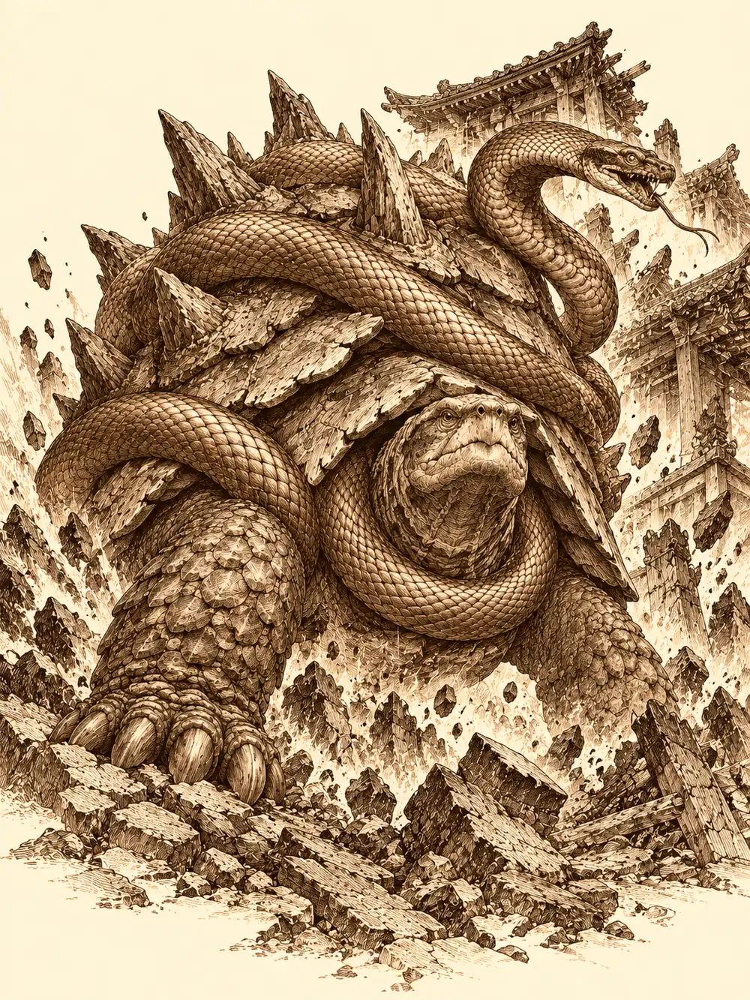

Capítulo 175
Pedrisco en el norte
Libro X · Hasta pronto, Kuroto
Hakara olía a sal y a pescado puesto a secar. Habían reconstruido el puerto desde la última vez, y en la casa donde antes vivía un pescador al que nadie echaba de menos colgaba ahora un cartel de "se vende". Guxi se perdió entre los puestos con una lista de provisiones. Arwen se perdió en general.
La encontraron en un patio, delante de un hombre de brazos gruesos que golpeaba una diana de madera con el puño desnudo hasta hacerla temblar.
"¿Cómo pegáis con las manos sin garras?", le preguntaba la niña, fascinada.
El hombre le explicó que enseñaba artes de lucha. Ella quiso probar.
Sun y Serafina la recogieron de allí con la cabeza en otra parte. Habían perdido a Kurobane. Le estaban ayudando a meditar, dentro de aquella sala blanca que tenía en la mente, y algo se torció: una sombra se lo había tragado delante de ellos y ya no estaba en ningún sitio. Creían que se había quedado atrapado en su propia oscuridad y que tendría que salir de ella por sí mismo. No sabían dónde buscarlo.
Arwen tampoco estaba del todo entera. Iba casi cada día a la tumba de Chilia, donde había empezado a crecer un árbol, y lo regaba y le hablaba. El resto del tiempo lo dedicaba a probar sus nuevas travesuras: meterle la mano helada a alguien por la espalda, o darle una chispa en la oreja al pasar. Desde el templo del este tenía las manos frías y los dedos le chisporroteaban, y había decidido que eso era divertidísimo.
Al salir de la ciudad, alguien los esperaba en lo alto de una roca. Shen llevaba un rato observándolos con el tercer ojo, a Serafina y a Sun sobre todo.
"Os acompaño".
"Nadie te ha invitado".
"Por eso me invito yo".
El viaje al norte duró días. No encontraron más peligro que ellos mismos.
Sun se apartaba en cada descanso, cuando creía que nadie lo veía, y practicaba golpes contra los troncos buscando siempre el punto exacto, el sitio por donde un árbol se parte si se le da bien. Últimamente fallaba más de lo que acertaba y eso le comía por dentro. Guxi lo encontró en una de esas y le echó un brazo por los hombros.
"Hace mucho que no hablamos, ¿eh?".
"Me acaba de dar un escalofrío. ¿Qué pasa?".
"Nada. Que últimamente ceno solo y podríamos cenar juntos alguna vez. Como amigos".
"A ver, que yo te aprecio. Eres mi compañero y te tengo en mucha estima. Pero admítelo: amigos, amigos, todavía no".
"Pues por eso".
Sun le dio la vuelta un par de veces y acabó chocándole la mano.
"Venga. Por nuestra nueva amistad".
Serafina los miraba desde lejos con una sonrisa que no se molestó en esconder.
Esa noche, el campamento se llenó de un zumbido. Un oso con un mechón pelirrojo bajaba corriendo por la ladera con un panal en la boca y una nube de abejas furiosas detrás. Sun se convirtió en tortuga y se metió en el caparazón. Guxi se volvió de piedra. Shen lanzó un golpe de viento que solo consiguió que las abejas se enfadaran más y se elevó en el aire a una distancia prudente. Serafina corrió de un lado a otro del campamento perseguida por media colmena.
El oso dejó el panal en el suelo, se hizo niña y dijo que había traído miel. Luego le dio dos golpecitos al caparazón de Sun con la mano.
Subieron a las montañas y llegaron a la aldea de los antiguos protectores del norte. Allí habían vivido los aarakocra que guardaban aquel templo, hasta que unos cultistas los mataron a casi todos. Las casas seguían en pie, pero la hierba se había comido los caminos y el polvo cubría los suelos. Nadie había pasado por allí desde la masacre.
Serafina iba quitándose aguijones de abeja de los brazos.
"Es una lástima que no llegáramos a tiempo de salvarlos".
Guxi caminaba pensativo. Cuando estuvieron cerca del templo, se detuvo.
"Si mis temores tienen fundamento", dijo, "esa persona que estamos viendo en los recuerdos podría ser alguien que tendría todo el sentido. Por lo que habéis contado, parecía muy importante entre los yokai. Y tengo una teoría: si esos fragmentos llevan recuerdos dentro, quizá sean ellos los que están corrompiendo a los guardianes". Miró a los dos monjes. "No entiendo cómo funciona eso que vosotros sentís por dentro, pero quiero intentar conectar con el recuerdo, y para llegar al guardián os necesito. Esta guerra viene de hace más de mil años. Si no sabemos qué se ha perdido, no vamos a poder ganarla".
"Si salimos vivos y el bicho aún respira", dijo Sun, "todo tuyo".
El templo estaba metido entre las rocas y medio hundido en la vegetación. Le faltaba la mitad del techo y se había derrumbado buena parte de los muros. Junto a la entrada había una charca de agua estancada.
Arwen empezó a hablar con los arbustos. Los arbustos se quejaron. Había una tortuga enorme, decían, que no paraba de temblar y no los dejaba dormir. La niña repartió comida a todo el mundo, a sus compañeros y a los arbustos también, y se la ofreció a Shen.
"No, gracias".
"Arwen tiene un regalo para ti". Se le subió encima, le tocó la cara y decidió que tenía la piel muy blandita. Sacó de la mochila un bote verde y le echó encima un chorro de algo que parecía un moco. "Con esto estarás protegido de los bichos. Aquí pican muy fuerte".
Shen se apartó de un salto.
"¿Por qué todo lo que haces es tremendamente asqueroso, niña? Comes bichos, sacas mocos verdes de una mochila y hablas por el grupo".
"No es asqueroso".
Le explicó, a su manera y muy deprisa, que no querían matar a los guardianes: querían quitarles lo malo que les había metido Otakemaru, porque ellos eran los que antes impedían que pasaran los demonios. Shen dejó de escuchar a la tercera frase. Moldeó con tierra una figurita de Arwen y se la dejó delante como si fuera una broma muy graciosa.
Dentro, el altar estaba partido entre las piedras. Guxi trepó hasta el sarcófago, le habló, probó con su magia de curación y no consiguió que reaccionara. Sun y Serafina se sentaron en el suelo, se cogieron de las manos y meditaron, buscando como en el templo del este la presencia que dormía dentro.
No había nada.
Arwen, mientras tanto, se había puesto a pintar en una piedra del altar una tortuga bailando. Le preguntó a un arbusto qué le parecía. El arbusto se agitó.
"Mierda. Ya está aquí otra vez".
El suelo se movió. Todos menos Serafina cayeron de culo. Guxi, que estaba arriba junto al sarcófago, resbaló hasta el borde y se quedó colgando.
Lo que dormía no estaba en el sarcófago. Estaba debajo.
La tierra se abrió y Genbu salió de ella. Era una tortuga gigantesca, con la piel negra y el caparazón erizado de púas enormes, y enroscada a su alrededor una serpiente de un rojo sucio que siseaba. Por las paredes de la muralla asomaron patas largas y peludas, y bajaron arañas con cabeza de toro que escupían hilos pegajosos. Detrás, de la roca misma, se levantó una criatura de piedra.

Serafina saltó hacia el borde, agarró a Guxi de la camisa antes de que cayera y lo subió de un tirón. Una de las telarañas atrapó a Arwen, que se había convertido en cucaracha, contra la piedra donde estaba pintando, con la cera todavía en la mano; tuvo que volver a ser niña para liberarse.
La pelea fue un barrizal. La tierra temblaba cada pocos instantes y tiraba a todo el mundo, y cada temblor rompía la concentración de quien estuviera sosteniendo un conjuro. Había veneno en el aire y charcos de ácido que se abrían en el suelo. Serafina saltaba de enemigo en enemigo sin que las redes la atraparan. Sun intentaba doblegar a Genbu con sus técnicas, buscando el sitio, y la tortuga se metía en el caparazón como en una fortaleza mientras la serpiente seguía mordiendo por ella.
Guxi liberó a Arwen de las redes y sacó sus torretas. Se quedó plantado en un charco de ácido porque si se movía perdía la posición, y aguantó la quemadura sin quejarse demasiado. Arwen se hizo árbol para cubrir a los demás, y por un momento algo se le encendió dentro, una rabia que no era del todo suya, y en vez de conjurar mordió. Luego se le pasó y volvió a curar, y regeneró a Serafina cuando la capitana ya estaba en las últimas. Sun silbó a su nube para no tocar el suelo que se movía. Shen, que había decidido que aquello era más divertido de lo que esperaba, encontró en su lanza una luz radiante que partía en dos a las arañas.
Siguieron golpeando hasta que Genbu dejó de moverse.
Nadie había dicho esta vez que quisiera dejarlo con vida. Con el tigre y con el dragón habían tenido cuidado de dejarlos inconscientes. Con la tortuga no. Genbu estaba muerto, por lo menos aquella forma suya.
Arwen buscó el fragmento. Lo encontró clavado entre las placas del caparazón. Se hizo osa, lo agarró con las fauces y tiró con todas sus fuerzas. Las patas le resbalaban en el barro y la pieza no se movía.
Pero algo pasó por los dientes.
Vio el mapa de Kuroto. En el lugar donde ahora estaba la colina de Sho había una aldea pequeña, y la aldea crecía, se hacía villa y después ciudad. Como hormigas, como una plaga, la gente se extendía por toda la isla, abría caminos, levantaba pueblos, y los bosques retrocedían. Los yokai se apartaban, se iban hacia el norte y hacia el sur, abandonando tierras que habían sido suyas. Vio cómo los hombres espantaban a los que se acercaban a los pueblos. A los grandes, a los que daban miedo, los cazaban. A los pequeños, a los kappa y a los demás, los echaban.
La osa soltó la presa, se sentó en el barro y poco a poco volvió a ser niña. Tenía cara de no entender nada. Mientras miraba, se le había escapado un moco de la nariz. Cayó al suelo y el suelo se deshizo como si fuera ácido. La niña se lamió el labio.
"Sabe como los caramelos ácidos".
Luego les contó lo que había visto.
"¿Sabéis lo que pasa cuando una planta crece mucho, mucho, mucho y ahoga a todas las demás? Pues he visto cómo la gente que llegó a Kuroto hacía las ciudades cada vez más grandes, y los pueblos, y los caminos que ahora llevan a todos sitios. Y cómo echaban a los yokai de lo que era su casa. A los grandes y a los que daban miedo los cazaban. A los pequeñitos los espantaban".
"Vaya", dijo Sun. "Parece que tenían razón".
"¿Somos los malos?".
"A ver cómo te lo digo. Nosotros no hemos hecho nada malo. Los que se portaron mal fueron los que vinieron primero. Ya no hay manera de que esa gente pague. Lo que tendríamos que hacer es intentar hacer las paces con esos yokai. Y si no quieren, defendernos".
"¿Y cómo vamos a hacer las paces con ellos?".
"Eso me gustaría saber a mí también".
Mientras hablaban, Shen golpeó el suelo con el extremo de la lanza. A Sun le apareció en la frente una cinta dorada con dos lazos largos que le caían por la espalda y brillaban igual que la capa y las espinilleras. Cuando el mono se tocó la frente, Shen ya se había ido sin decir nada.
"Ya me ha vuelto a poner algo sin explicarme nada", gruñó Sun.
Arwen se acercó a la tortuga y le apoyó la mano en el caparazón.
"Cuando vuelvas a despertar vas a ver los dibujos que Arwen ha hecho en tu templo. Te van a gustar".
Genbu empezó a deshacerse en motas de luz, como los otros guardianes, hasta que no quedó nada.
"Vamos a hacer las paces con esos yokai", dijo la niña. "Si quieren. Siempre es mejor ser amigos que ser enemigos. Arwen hablará con ellos".
Guxi y Serafina se quedaron atrás un momento.
"Quizá la prisionera del sur sepa algo de ese hombre que hemos visto en los recuerdos", dijo él. "Si me lo describe, puede que lo identifique".
"Lo peor es que no lo dudo. Todo lo que vamos encontrando apunta hacia él".
En el palacio de Sho, Kazuki se presentó ante Yasuoka, Fukami y Yuichi como portavoz de los Guardianes de Kuroto, con Guxi a su lado. Les explicó que querían ser un puente entre los humanos y los yokai que no quisieran seguir la guerra. Guxi repartió carpetas con la transición del gobierno y un primer borrador de leyes más humanas. Los nobles preguntaron por cultivos, por derechos, por los yokai salvajes, y Yasuoka propuso cambios. Tiari llegó tarde, aceptó la nueva estructura y preguntó por qué había dos cazadores en el consejo; Kazuki le aclaró que él era el portavoz y Guxi lo ayudaba. Luego vino el dinero. Yuichi habló de números rojos, de pérdidas de guerra, del comercio por mar cerrado. Tiari ofreció que las Cuchillas Negras pagaran a la fuerza de élite, y Kazuki, que sospechaba que algo pediría a cambio, dijo que antes tenía que consultarlo con los suyos. Los nobles aceptaron el cambio y lo que representaba. Kazuki salió decepcionado. Guxi le dijo que había dado la cara y le ofreció enseñarle a moverse en la corte.
Junto al mar, Serafina citó a Sun para cumplir a su manera el encargo que le había dejado el monje Tang. Se batieron en la arena, ella con saltos y distracciones, él con la cola, con los pies y con el sol a la espalda. Cuando él intentó imitar la precisión de otro, ella le pidió que siguiera siendo él mismo. Un intercambio la dejó en el suelo y, en lugar de enfadarse, se rio, lo abrazó llorando y le dio las gracias por haberla ayudado a recuperar a su madre y sus raíces. Sun le pidió que le diera una bofetada para recomponerse. Ella se la dio, después de una caricia de broma. Volvieron a empezar. Serafina bebió un trago y atacó de una forma imposible de prever, y Sun concentró su energía en los ojos y durante unos instantes la vio moverse despacio, como bajo el agua, y supo adónde iba a ir antes que ella. El escozor lo obligó a soltarlo. Bloqueó como pudo, falló la respuesta y cayó frustrado en la arena.
Ella le tendió la mano. La chispa de siempre saltó entre los dos, y esta vez lo calmó. Siguieron hasta que se puso el sol.